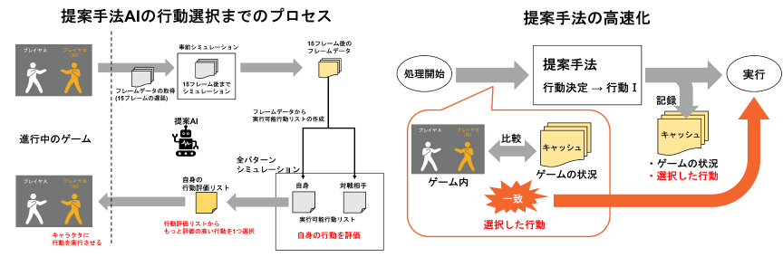

Research
コンピューティングデザイン研究室
山崎 憲一 教授
私たちの生活を豊かにするコンピュータをデザインしよう
超小型コンピュータが組み込まれた電子タグやセンサがネットワークに接続されるIoT（Internet of Things）の時代がもう始まっています。IoTからの膨大なデータは数百万台のコンピュータからなるクラウドに集められ、人工知能のアルゴリズムにより解析され、新しいサービスを次々に生み出して行きます。コンピュータは、これからも私たちの生活を大きく変えていくでしょう。そんな未来のシステムを自分の手でデザインしてみませんか。
-

描画作業の履歴を用いた支援ツールの提案
新井 優希 -
ビデオ会議の分散型SFUホストの提案
草刈 大和 -

格闘ゲームにおける複数攻撃候補に対応可能な行動をする対戦AIの提案
沼野 陸 -
WebAssemblyの実行時統計情報に基づくネイティブバイナリの実行時間の推定
山下 亮輔 -
IoT データ収集のための複数 broker による MQTT システムの提案
鈴木 啄斗